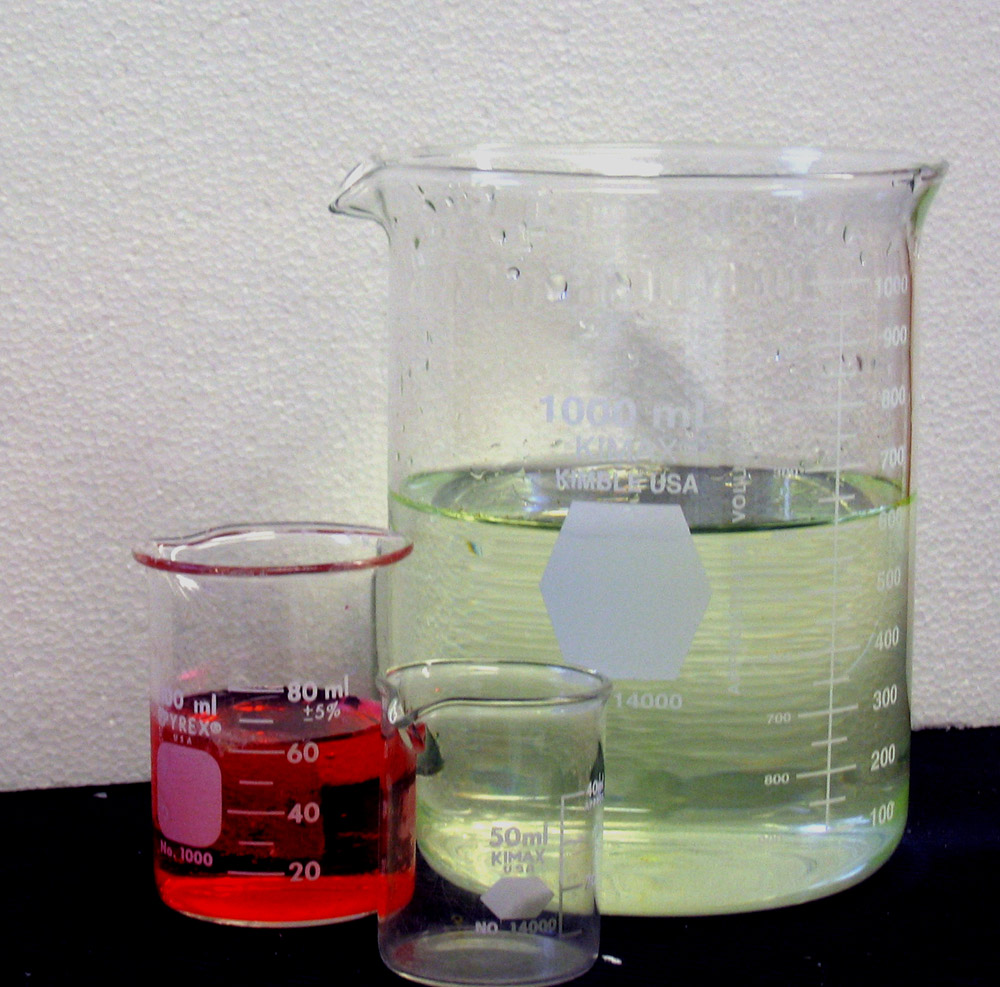
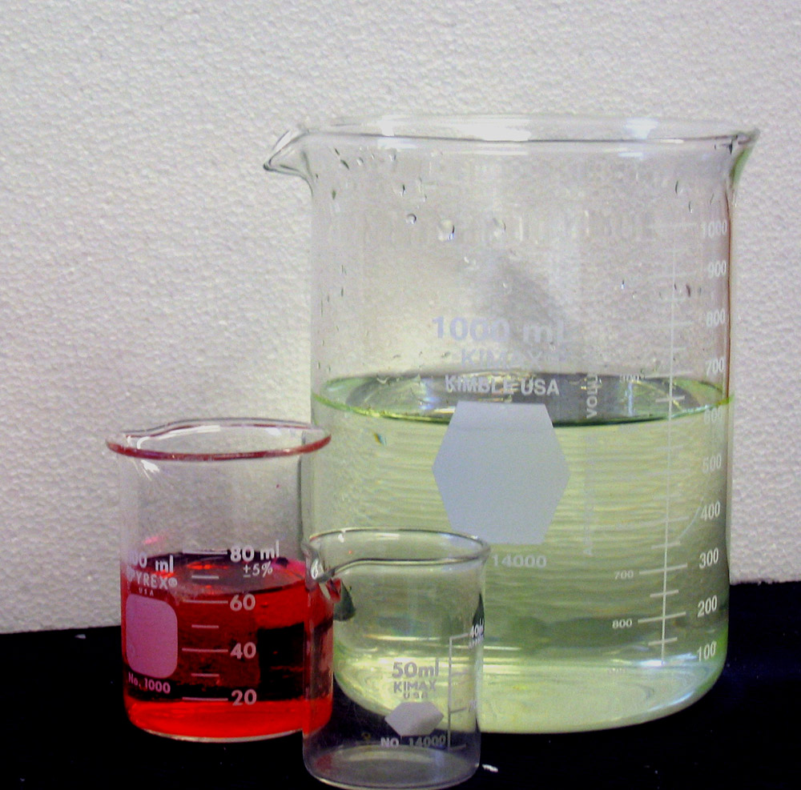
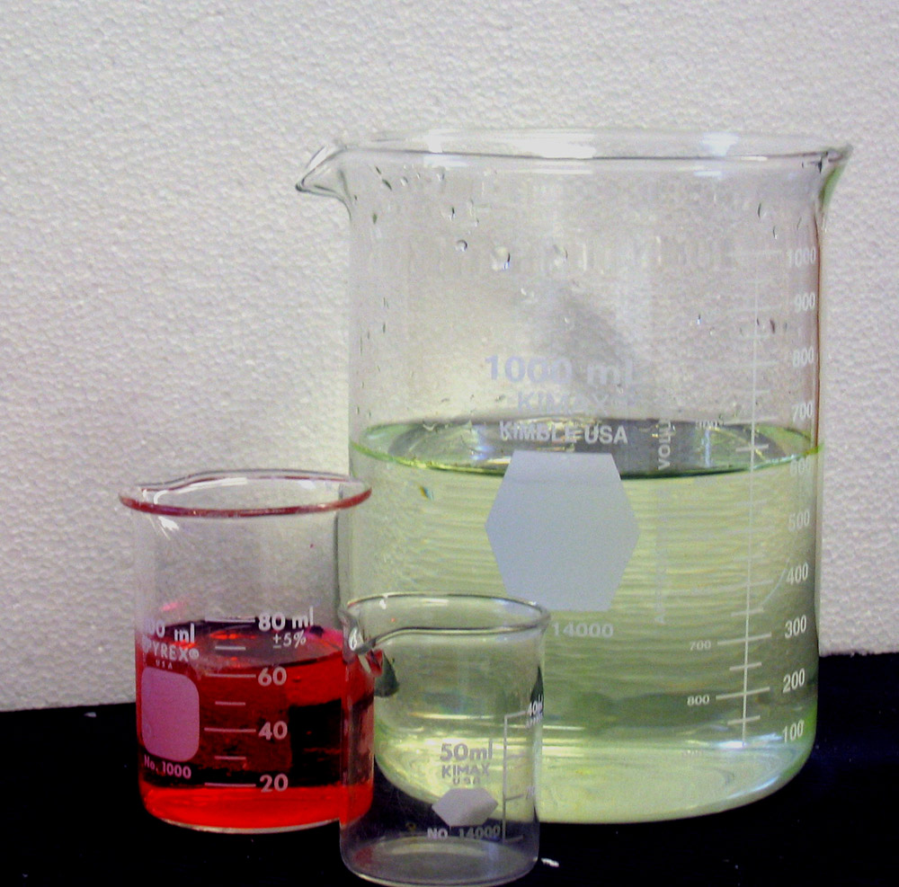

CSS Media Queries test
These images will become inline thumbnails if the display area becames small enough.

 

These images will become inline thumbnails if the display area becames small enough.
